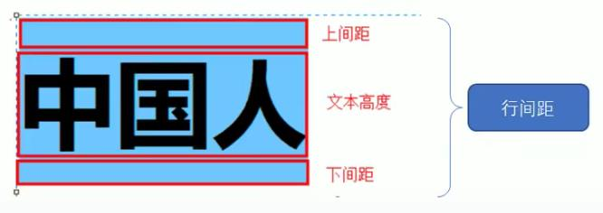

8 文本属性
CSS使用text（文本）属性用于定义文本的外观，比如文本颜色、文本对齐、装饰文本（下划线）、文本缩进、堕落行间距。
8.1 文本颜色
coclor属性用于定义文本的颜色。
语法
div {
color: red;
}| 颜色属性 | 属性值 |
|---|---|
| 预定义颜色值 | red、green，blue，pink |
| 十六进制 | #FF0000、#FF6600 |
| RGB代码 | rgb(255,0,0)，rgb(100%,0%,0%) |
例子
<head>
<style>
div {
/* color: pink; */
/* color: #ff00c8; */
color: rgb(255, 0, 0);
}
</style>
</head>
<body>
<div>喜欢pink色的男生</div>
</body>注意
开发中最常使用的十六进制的颜色。
8.2 对齐文本
text-align属性用于设置元素内文本内容的水平对齐方式（左、右、居中对其），无法实现垂直对齐。
语法
div {
text-align: center;
}| 属性值 | 解释 |
|---|---|
| left | 左对齐（默认值） |
| right | #右对齐 |
| center | 居中对其 |
例子
<head>
<style>
h1 {
/* 本质是让h1盒子里面的文字水平居中对齐 */
/* text-align: right; */
text-align: center;
}
</style>
</head>
<body>
<h1>居中对其的标题</h1>
</body>8.3 装饰文本
text-decoration属性规定添加到文本的修饰，可以给文本添加下划线、删除线、上划线等。
| 属性值 | 解释 |
|---|---|
| none | 默认，没有装饰线（最常用） |
| underline | 下划线。链接a自带下划线（常用） |
| overline | 上划线（几乎不用） |
| line-trrough | 删除线（不常用） |
例子
添加下划线，以及链接取消下划线。
<head>
div {
/* text-decoration: underline; */
/* text-decoration: line-through; */
text-decoration: overline;
}
a {
text-decoration: none;
}
</style>
</head>
<body>
<div>粉红色的回忆</div>
<a href="#">粉红色的回忆</a>
</body>8.4 文本缩进
text-indent属性用来指定文本第一行的缩进，通常是将段落首行缩进。
语法
div {
text-indent: 10px;
}通过设置该属性，所有元素的第一行都可以缩进一个给定的长度，这个长度甚至可以是负的。
div {
text-indent: 2em;
}em是一个相对单位，就是当前元素(font-size)1个文字的大小，如果当前元素没有设置大小，则会按照父元素的1个文字大小。
例子
<head>
<style>
/* 文本第一行缩进2字符 */
p {
text-indent: 2em;
}
</style>
</head>
<body>
<p>打开北京、上海与广州的地铁地图，你会看见三张纵横交错的线路网络，这代表了中国最成熟的三套城市轨道交通系统。</p>
<p> 可即使这样，在北上广生活的人依然少不了对地铁的抱怨，其中谈及最多的问题便是拥挤——对很多人而言，每次挤地铁的过程，都像是一场硬仗。更何况，还都是败仗居多。</p>
<p> 那么，当越来越多的二线甚至三线城市迎接来了自己的地铁，中国哪里的地铁是最拥挤的呢？</p>
</body>8.5 行间距
line-height属性用于设置行间的距离（行高），可以控制文字行与行之间的距离。
语法
p {
line-height: 26px;
}文字的行高等于盒子的高度。行高 = 上距离 + 内容高度 + 下距离 上距离和下距离总是相等的，因此文字看上去是垂直居中的。

图8.1: 行间距示意图
例子
设置行高为26像素，因为文字高度默认是16像素，所以上下间距均为5像素。
<head>
<style>
/* 文本第一行缩进2字符 */
div {
line-height: 26px;
}
</style>
</head>
<body>
<div>中国人</div>
</body>8.6 文本属性总结
| 属性 | 表示 | 注意点 |
|---|---|---|
| color | 文本颜色 | 我们通常用十六进制比如而且是简写形式#fff |
| text-align | 文本对齐 | 可以设定文字水平的对齐方式 |
| text-indent | 文本缩进 | 通常我们用于段落首行缩进2个字的距离text-indent: 2em; |
| text-decoration | 文本装饰 | 记住添加下划线underline取消下划线none |
| text-height | 行高 | 控制行与行之间的距离 |